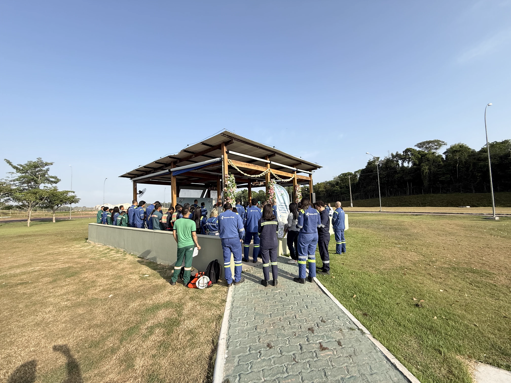
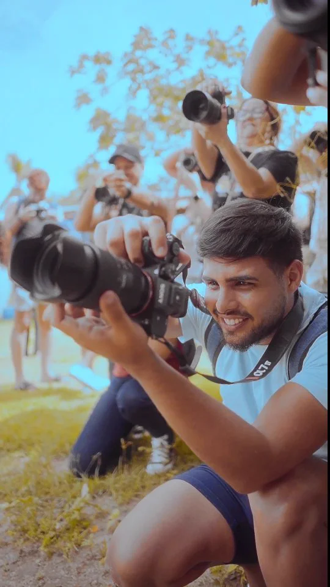
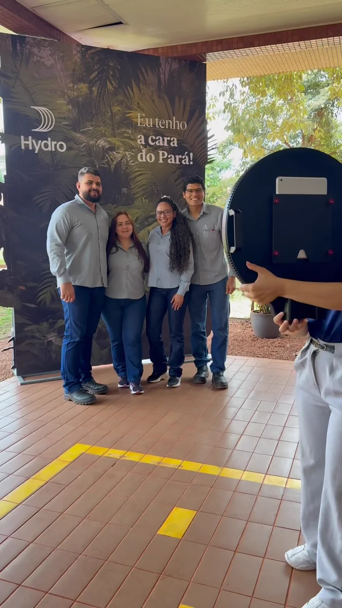
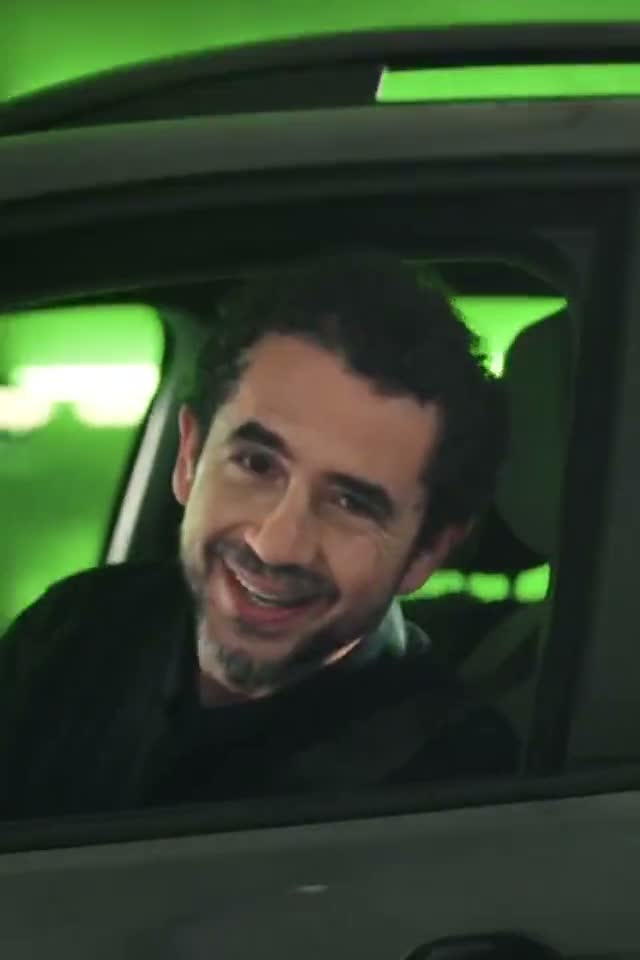
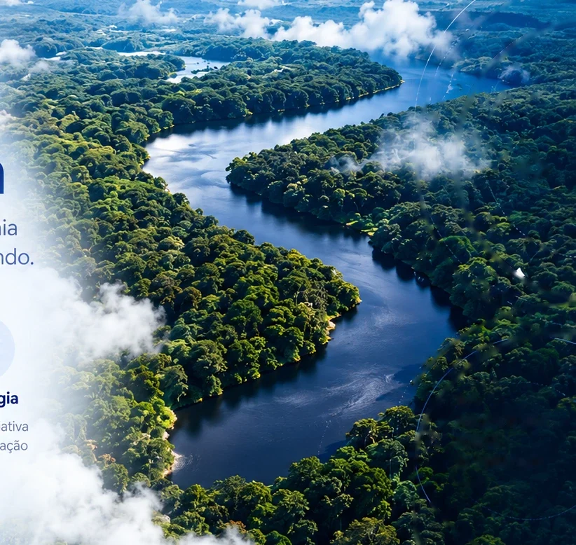
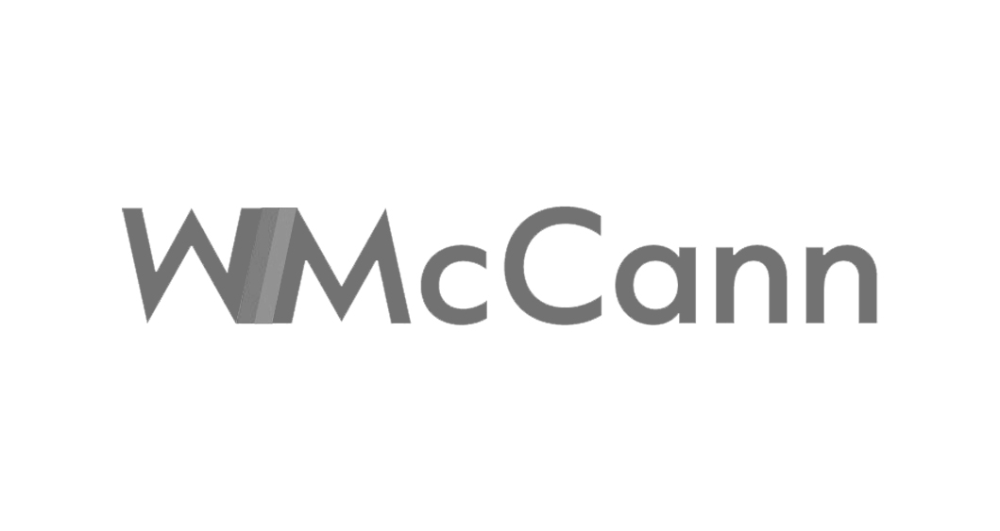
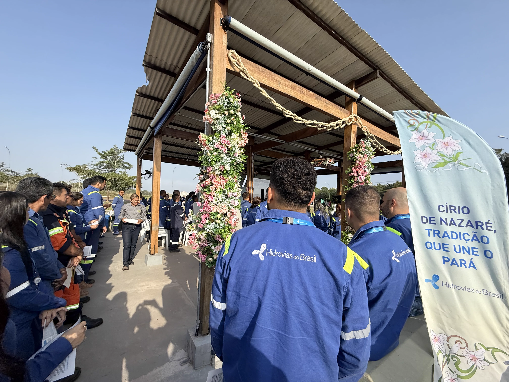

Filmes Publicitários
Comerciais de alto padrão para televisão, cinema e plataformas digitais com direção de arte e fotografia de referência.
Cinematografia com propósito, técnica e alma amazônica para dar vida a narrativas de alto impacto.
Produzimos filmes publicitários, documentários, séries e coberturas memoráveis que elevam a percepção de marcas e instituições.

Combinamos equipamentos de cinema, olhar etnográfico sensível e direção de arte refinada. Cada tomada é pensada para valorizar o território, as pessoas e a verdade de cada marca.
Comerciais de alto padrão para televisão, cinema e plataformas digitais com direção de arte e fotografia de referência.
Investigação e resgate de memórias, patrimônio imaterial e narrativas de impacto socioambiental na Amazônia.
Transmissões ao vivo, captação multicâmeras e pós-produção dinâmica para grandes ativações e celebrações culturais.
Captação aérea cinematográfica e registros técnicos de operações fluviais, florestais e industriais complexas.
Conteúdos que traduzem governança, sustentabilidade e relacionamento com comunidades locais de forma transparente.
Finalização em 4K, correção de cor profissional com LUTs autorais, sound design imersivo e motion graphics.



Mapeamento da narrativa, pesquisa local, decupagem de cenas e definição de tom editorial.
Visita técnica a locações na Amazônia, autorizações, casting e cronograma preciso.
Câmeras de cinema, iluminação avançada, captação de áudio direto e voos com drone 4K.
Montagem, color grading profissional, trilha sonora original e entregáveis para todas as mídias.
Conheça alguns dos projetos audiovisuais desenvolvidos pela LENSES.

Filme institucional, identidade de embalagem e cobertura de lançamento na Amazônia.
Explorar case ↗
Série documental registrando a riqueza cultural e humana dos rios e florestas.
Ver projetos ↗
Registros fotográficos e audiovisuais para marcas que celebram o patrimônio local.
Ver projetos ↗Converse com os diretores e produtores da LENSES para planejar seu próximo filme publicitário, documentário ou cobertura.
Falar com a produção